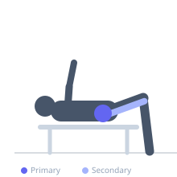
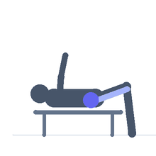

Exercise guide / Glute-Focused 45-Degree Hyperextension
Glute-Focused 45-Degree Hyperextension
A hyperextension machine exercise performed with a rounded lower back and posterior pelvic tilt to isolate the glutes rather than the erector spinae. By flexing the spine slightly and driving the hips into extension, the glutes become the primary mover rather than the back extensors.
Primary muscles
gluteus maximus
gluteus medius
Secondary muscles
biceps femoris long head
semitendinosus
Stabilizers
transverse abdominis
adductor magnus
Equipment
Lat Pulldown Machine
Optional
No Equipment (Bodyweight)
Weight Plates


Starting position
- Position yourself in the 45-degree hyperextension machine with the pad below the hip crease, not across the hips. Begin with the torso hanging forward.
Setup
- Set the hyperextension bench pad below the hip crease so the hips can fully flex. Optionally hold a plate at chest for load.
Steps
- Step 1: Allow the torso to drop forward so the hips are fully flexed.
- Step 2: Drive the hips up by squeezing the glutes, keeping the lower back slightly rounded.
- Step 3: Extend the hips fully at the top — the goal is hip extension, not lumbar extension.
- Step 4: Lower back to the starting position with control.
Coaching cues
- Squeeze the glutes, not the back
- Drive the hips up, not the chest up
Breathing
- Exhale on the drive up. Inhale on the lower.
Range of motion
- Full hip flexion at the bottom. Full hip extension at the top — stop before lumbar hyperextension.
Tempo
- 2-0-2-0
Common mistakes
- Hyperextending the lumbar spine at the top instead of stopping at hip extension
- Using momentum to swing up
Safety
- The lower back should be slightly rounded to shift the emphasis to the glutes away from the erectors
Training
- hypertrophy: 8–15 reps
- endurance: 15–25 reps
- hypertrophy: 3–4 sets
- endurance: 2–3 sets
- Rest: {'hypertrophy': 90, 'endurance': 45}